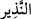

Eski testi suyu pek soğutmaz.
Sahâbeden bir topluluk ve onlardan sonraki tâbiîn ve selef-i sâlihin kırk yaşına ulaşır,
yahut saç-sakallarında bir beyazlık görününce artık ibadet ve kullukta iyice sa’y ü
gayret eder, yatağı dürer, geceleri daha çok ibadetle geçirmeye yönelir ve insanlarla
olan muâşeret ve ilgiyi azaltırdı. Bu konuda kırk yaş yahut daha aşağısı fark etmez.
Çünkü ecel gizlidir; ne zaman geleceği bilinmez. Allah bizleri ve sizleri gaflet
uykusundan uyandırsın!
“Size uyarıcı da gelmedi mi? (Niçin inanmadınız?)”
Burada uyarıcı anlamına gelen “den murad, Hz. Muhammed (s.a.)’dir. Ulemâ ve
müfessirlerin çoğu bu kanâattedir. Yahut bu uyarıcı Kur’an veya akıldır. Zira akıl da
hayır ve şerri iyi ve kötüyü ayırt edebilir. Yahut bu uyarıcı, yakın akraba, komşu,
kardeş, arkadaş ve dostların ölümüdür. Yahut saç ve sakalın beyazlamasıdır. Gerçi bu
saç ve sakalın ağarması diğer uyarıcı unsurlar gibi herkese şâmil olmaz. Kâşifî der ki
âlimlerin çoğuna göre, “nezîr”den murâd edilen “şeyb” yâni saç sakal ağarması,
ihtiyarlıktır. İhtiyarlık zamanı, hayat şulesini söndürür ve zât aynasını paslandırır.
Dert davulu yaşlılık zamanını bildirmek için çalınca,
Gönül mutluluk ve eğlenceden soğur.
Bedene ve tene bir kırgınlık gelir;
El gibi ayak da gevşer ve titremeye başlar.
Beyaz saç ecelden haber,
Eğilmiş dal ölümden selâm getirir.
el-Makâsidü’l-hasene’de şöyle denildiği kaydedilir: Âdem (a.s.)’ın evlâdlarından ilk
olarak saçı sakalı ağaran İbrahim (a.s.)’dır. İbrahim (a.s.) “Ya Rab! Bu nedir?” diye
sorunca Allah Teâlâ “Bu, dünyada vakar, ağır başlılık ve saygınlık; âhirette ise nurdur”
buyurmuştur. Bunun üzerine İbrahim (a.s.) “Nûrumu ve vakarımı artır” diye duâ etmiştir.
Hadisi şerifte şöyle vârid olmuştur: “Elbette Allah Teâlâ saçı sakalı ağarmayan
ihtiyarı sevmez.”[91]
Kevâşî’de der ki, burada “uyarıcı” ile kişinin âhirete intikal ve irtihâlini bildiren her
şey murâd edilebilir. Artık bu uyarıcı geldiğinde uyanık olunmalıdır. Bundan dolayı
usulcüler der ki İmam-ı Muhammed’in iki kavlinden sahih olanı, haccın geniş zaman
opsiyonlu, yâni ertelenebilir bir görev olduğudur. Ancak ertelendiği zaman (hastalık,
fakirlik, ölüm gibi sebeplerle) haccın kaçırılması zann-ı galip ise bu durumda
ertelenmez; böyle bir kimse derhal hac yapmalıdır. Ölürse bir günah yoktur. Ancak
ertelediği takdirde haccın kaçacağı emareleri zâhir olur; kalbi de buna kanâat ederse
ertelemesi helal değildir. Bu durumda zaman daralmış olur. Delil de bu istikamettedir.
Zira başka bir delil yoksa kalp delili ile amel etmek vaciptir. Muvazzah’ta şöyle geçer:
Cehennemlikler feryat ederler, çığlık atarlar ve derler ki: “Ey Rabbimiz, bizi dünyaya